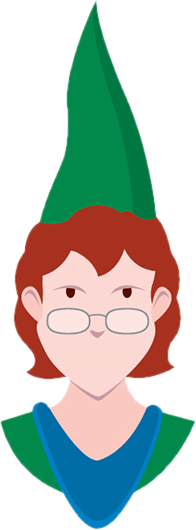

Vocês conseguiram!

O chapéu do jovem mago brilha de maneira intença e começa a tremer!
A luz vinda dele dispara uma enxurrada de bolinhas de gude na direção dos bandidos fazendo com que eles caiam direto no chão sem ter o menos equilíbrio para se levantar.
Bobby e Sheila não perdem a oportunidade e derrubam um dos toldos em cima dos bandidos, podendo assim desarma-los para continuar sua viagem.
O trio então consegue seguir o restante da viagem em paz até o Portal de Baldur..
Mas será que a história acaba por ai? O que pode aguardar essa turma de aventureiros pela Costa da Espada?